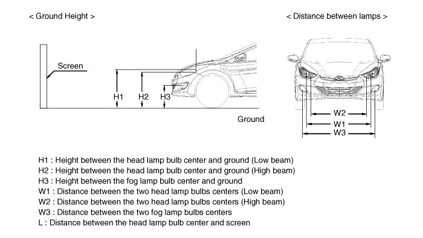
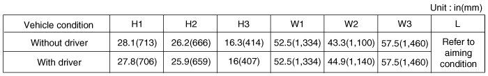
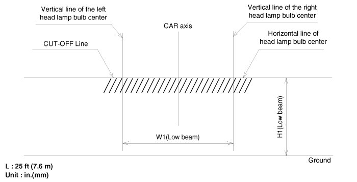
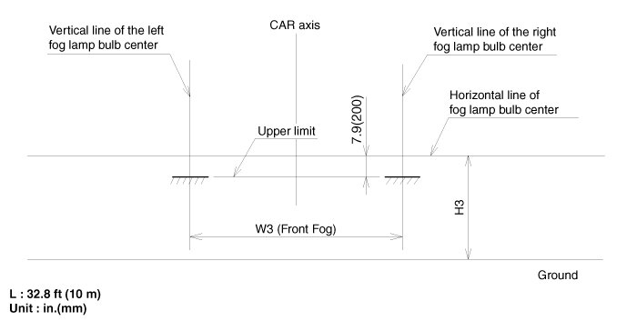

Head Lamp and Fog Lamp Aiming Point
Head Lamp And Fog Lamp Aiming Point


1. Head Lamp (Low beam)
A. Turn the low beam on without driver aboard.
B. The cut-off line should be projected in the cut-off line shown in the picture.
C. If head lamp leveling device is equipped, adjust the head lamp leveling device switch with 0 positions.

2. Turn the front fog lamp on without the driver aboard.
The cut-off line should be projected in the allowable range (shaded region)
